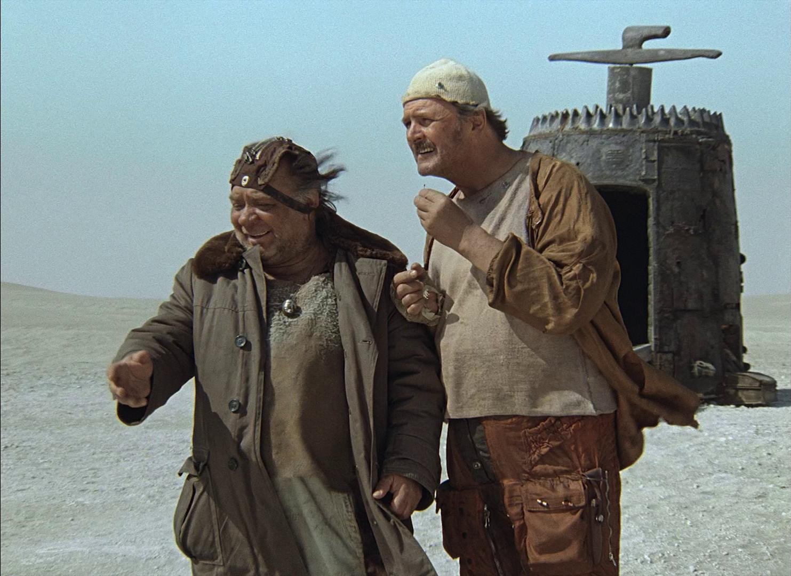
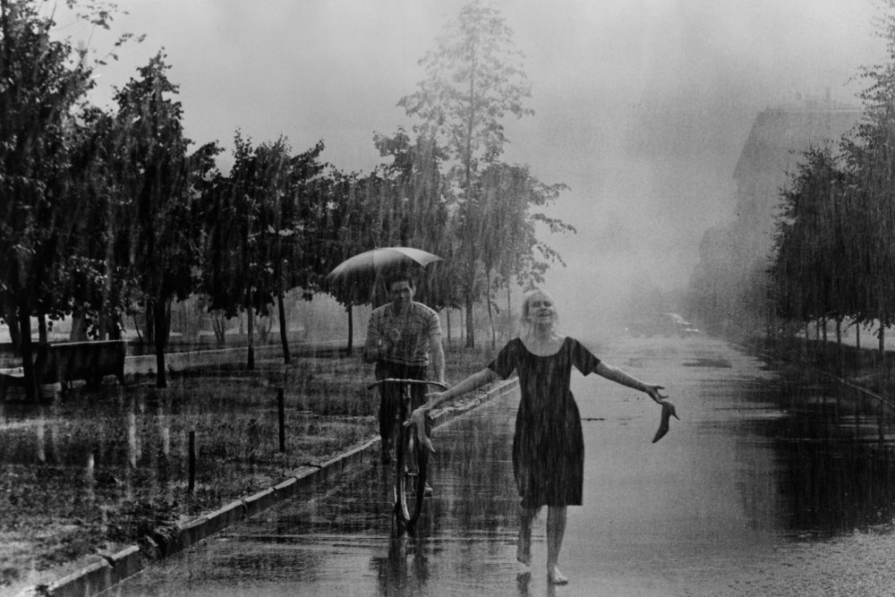
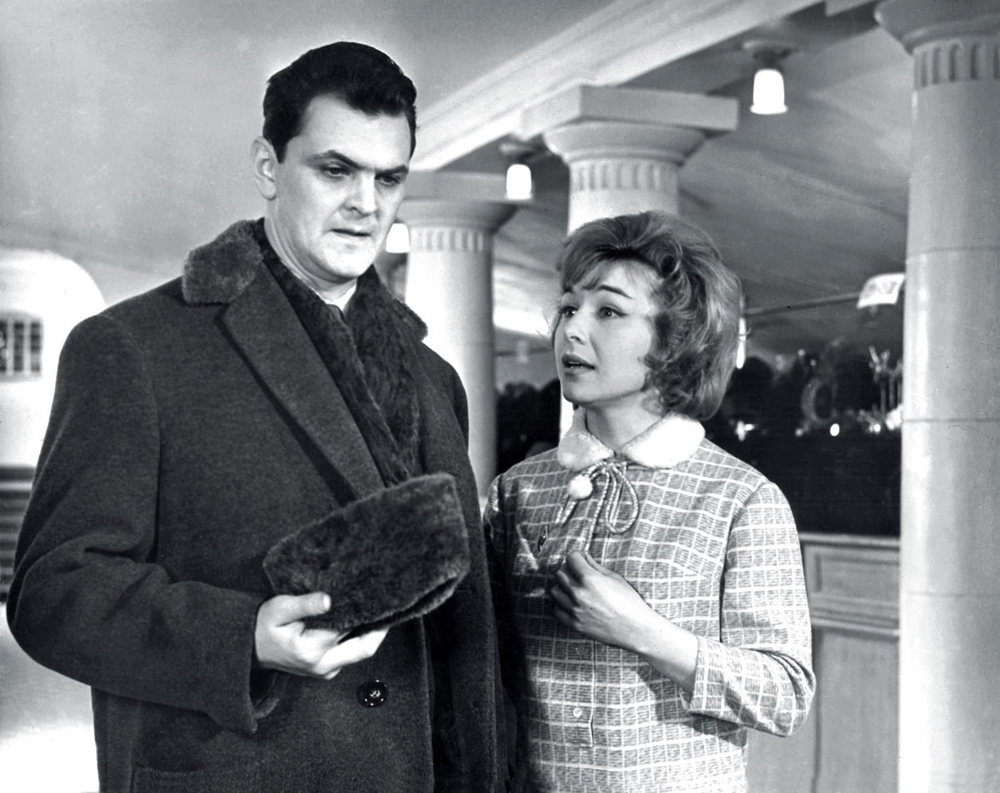
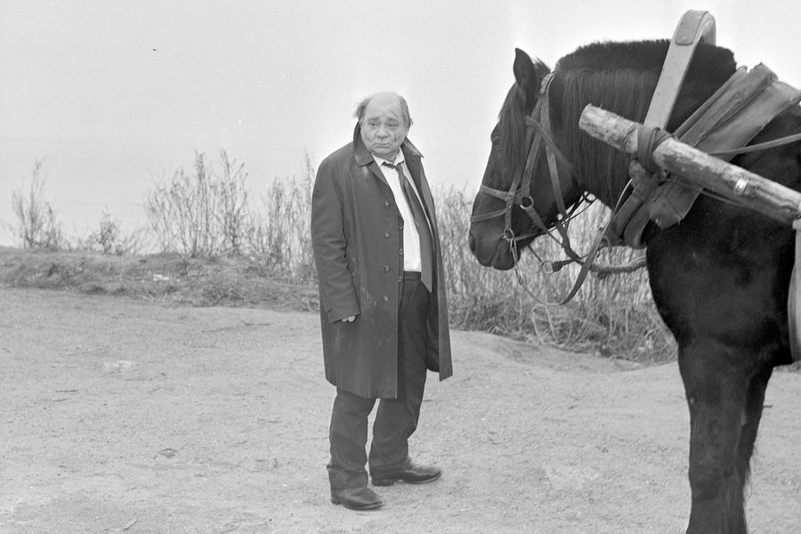

Кин-дза-дза

Сюжет
Прораб Владимир Николаевич Машков и не подозревал, что обычный путь до универсама за хлебом и макаронами
обернется межгалактическими путешествиями. А все эта встреча со странным босоногим человеком с каким-то
маленьким устройством — «машинкой перемещения», как тот ее назвал. Владимир Николаевич нажал кнопку и
оказался вместе со случайным попутчиком, студентом в кроличьей шапке, в пустыне — на планете Плюк в тентуре,
галактика Кин-дза-дза в спирали.
Жанры: драма, фантастика, комедия
Рейтинги фильмов на агригаторах
Кинопоиск: 8.1 из 10
IMDb: 7.9 из 10
Личный отзыв
Один из немногих фантастических фильмов в СССР, расчитанный на взрослую аудиторию. Может показаться, что
фильм относительно известен, но по наблюдениям многие его не видели. Некоторых отпугивает малый бюджет картины, по сравнению
с иностранной фантастикой(в сценах посадки космического корабля видны нитки и т.п.), но здесь скорее цепляют атмосфера,
персонажи(Юрий Яковлев и Евгений Леонов играют совсем нетипичные для себя роли) и сама история с интересными идеями и посылами.
Я шагаю по Москве

Сюжет
Володя работает монтажником в Сибири, в Москве он проездом — его небольшой рассказ, опубликованный в журнале
«Юность» вызвал интерес у писателя Воронина, пригласившего Володю на важный разговор. В метро он знакомится
с Колей — молодым задорным пареньком, возвращающимся с ночной смены. Володя собирается остановиться у своих
друзей, но не знает точно, где находится нужный переулок, Коля предлагает его проводить...
Жанры: мелодрама, комедия
Рейтинги фильмов на агригаторах
Кинопоиск: 8.1 из 10
IMDb: 7.7 из 10
Личный отзыв
Очень приятное произведение, погружающая смотрящего в мир Москвы 60-х годов, хорошая актерская игра и знаменитая песня, которую
знает куда больше людей, чем сам фильм. Картина была снята в период оттепели, что и объясняет ее духоподъемные и гуманистические
мотивы, характерные для данной эпохи в истории отечественного кинематографа.
Легкая жизнь

Сюжет
Окончив химический институт и решив остаться в Москве, Бочкин устроился заведующим химчистки. Беря частные заказы, он
очень быстро разбогател. Однако пришло время — и Бочкин перестал получать радость от больших денег и сомнительной
известности. Перед новыми друзьями он выдаёт себя за научного сотрудника, чем вызывает ряд недоразумений.
Жанры: комедия
Рейтинги фильмов на агригаторах
Кинопоиск: 8 из 10
IMDb: 7.5 из 10
Личный отзыв
Далеко не самая известная комедия с Юрием Яковлевым и Фаиной Раневской. Фильм о предназначении человека в обществе, о том,
как стремление к легким путям по жизни не всегда приводит к удовлетворению. Единственный минус для кого-то -
театральная актерская игра. Все играют хорошо, но как будто немного переигывают. Но тем не менее это, на мой взгляд, ничуть не портит
ощущение после просмотра.
Полеты во сне и наяву
Сюжет
Накануне своего сорокалетия герой фильма пытается подвести итоги прожитых лет. Увы: он подводит их, а они подводят
его. Ничто не приносит ему удовлетворения и счастья: ни любящая жена, ни юная любовница, ни друзья, ни работа...
Жанры: драма
Рейтинги фильмов на агригаторах
Кинопоиск: 7.9 из 10
IMDb: 7.5 из 10
Личный отзыв
Достаточно правдивый и от этого достаточно тяжелый фильм. Как
будто бы встаешь на место героя, испытываешь раздражение от его поступков, но при этом глубоко сопереживаешь ему, остается
слегка апатичное состояние после просмотра. Актерская игра, особенно Олега Янковского, и сценарий на уровне.
Слезы капали

Сюжет
Любящий муж и отец, отзывчивый сосед и сослуживец, словом, душа-человек в один прекрасный день превратился в недовольного
всем чинушу и формалиста. А всё потому, что в глаз попал осколок волшебного зеркала.
Жанры: драма, фэнтези
Рейтинги фильмов на агригаторах
Кинопоиск: 8.1 из 10
IMDb: 7.8 из 10
Личный отзыв
Притяно считать, что фильм является аллегорией на депрессию, хотя очень многие люди и без нее находидись в состоянии героя Евгения Леонова.
Кого-то может смутить жанр фэнтези, но по сути он здесь использован как инструмент для рассказа истории, разворячивающейся в нашей реальности.
Леонов блестяще исполняет свою роль, опять же нетипичную для него. Несправедливо неизвестный фильм, пусть и понятно почему.